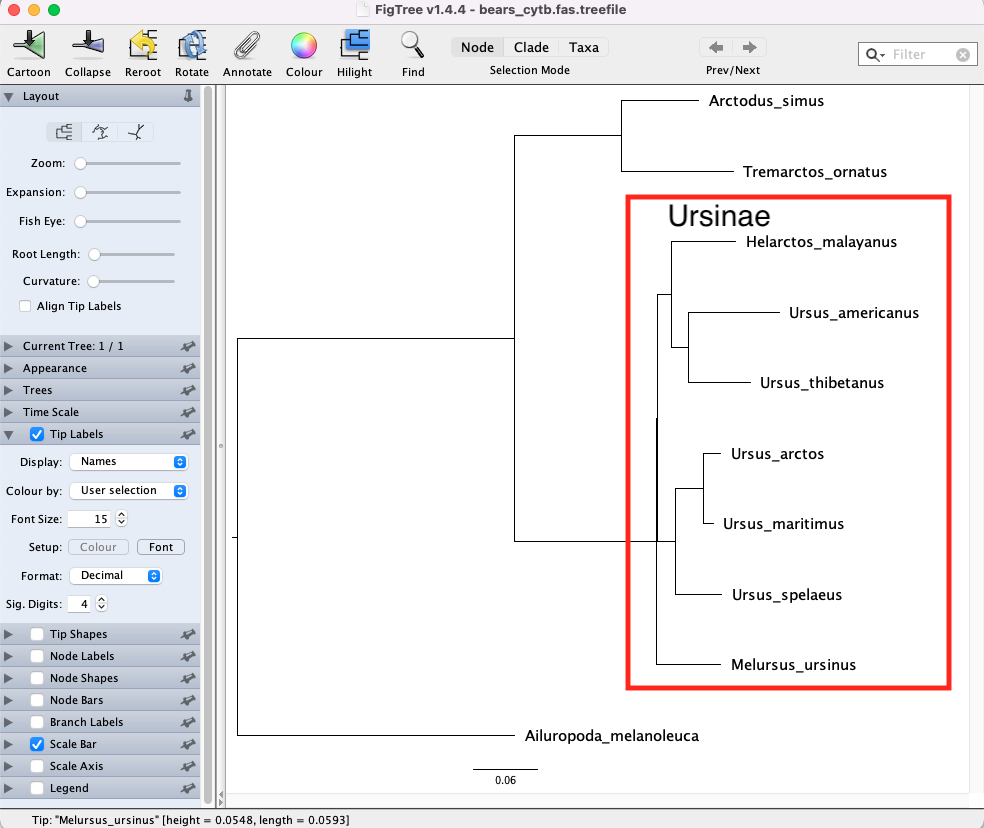
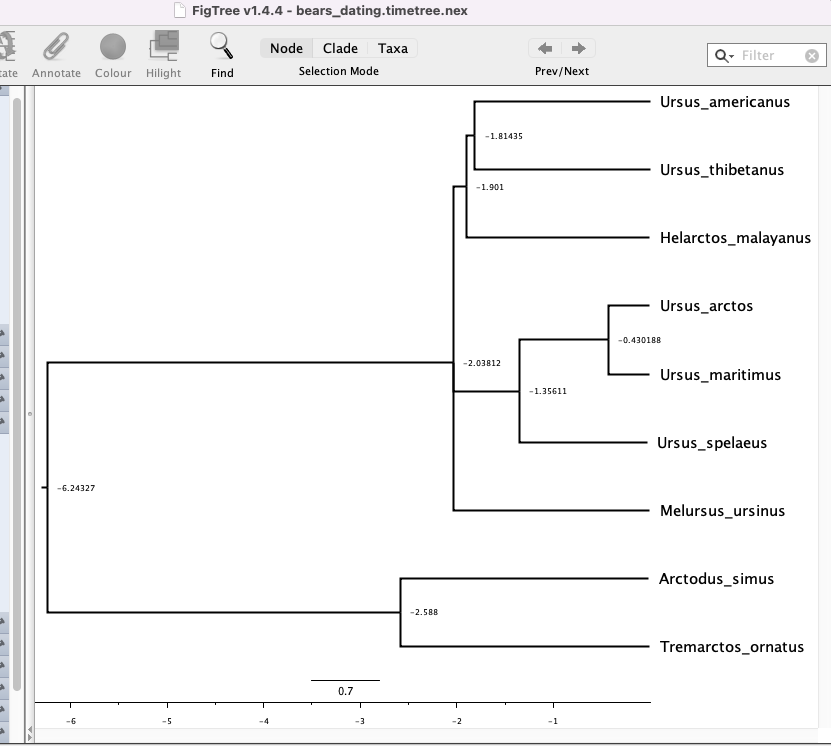
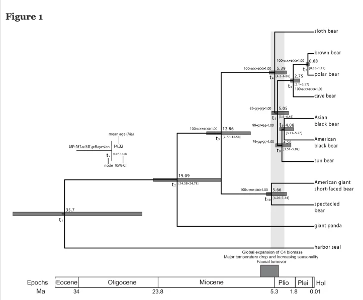

Chapter 17 Molecular Clock and Phylogenetic Dating
IQ-TREE integrate the least square dating (LSD2) method to build a time tree when you have date information for tips or ancestral nodes. LSD2 method is described in the paper:
Thu-Hien To, Matthieu Jung, Samantha Lycett, Olivier Gascuel (2016) Fast dating using least-squares criteria and algorithms. Syst. Biol. 65:82-97. https://doi.org/10.1093/sysbio/syv068
This lab is adpated from IQTree tutorials.
IQTree time tree construction has the following options:
| Option | Explanation |
|---|---|
| –date FILE | Dates of tips or ancestral nodes |
| –date TAXNAME | Extract dates from taxon names after last ‘|’ |
| –date-tip STRING | Tip dates as a real number or YYYY-MM-DD |
| –date-root STRING | Root date as a real number or YYYY-MM-DD |
| –date-ci NUM | Number of replicates to compute confidence interval |
| –clock-sd NUM | Std-dev for lognormal relaxed clock (default:0.2) |
| –date-outlier NUM | Z-score cutoff to exclude outlier nodes (e.g. 3) |
| –date-options “..” | Extra options passing directly to LSD2 |
17.1 Inferring time tree with tip dates
In the lecture of recent evolution, we mentioned that most pathogens have the exact sampling time, and given their evolutionary rates, these dates can be useful for calibrate a time tree. In order to use the tip dates for calibration, we need first to prepare a date file, in which each line displays a taxon name (from your sequence alignment) and its date separated by spaces, tabs or blanks. Note that it is not required to have dates for all tips.
In the example here, usflu.fasta (sequences) has the corresponding date file: usflu_date.txt:
CY013200 1993
CY013781 1993
CY012128 1993
CY013613 1993
CY012160 1993
CY012272 1994
CY010988 1994
CY012288 1994
CY012568 1994
CY013016 1994
CY012480 1995
......Here, we only supply the year. But you can include the date information with varying degree of certainty:
CY010988 1994-02-01:1994-03-01
CY012288 1994
CY012568 1994-02
CY013016 1994-01-25
CY012480 1995-02-08
......We can also provide a range of possible sampling date separated by a
:. For example, CY010988 was sampled in between 1st Feb 2014 and 1st
March 1994. We can also use NA to designate missing lower or upper
bound:
TaxonA 2018-02-01:NA
TaxonB NA:2018-03-31 which means that TaxonA was sampled after 1st Feb 2018 and TaxonB was sampled before 31st Mar 2018.
Now let’s try our first run of IQ-TREE with:
./iqtree2 -s usflu.fasta --date usflu_date.txtwhere -s takes a sequence alignment --date takes a DATE_FILE . This
single command line will perform three steps: (1) find the best-fit
model using ModelFinder, (2) find the maximum likelihood (ML) tree with
branch lengths in number of substitutions per site, and (3) rescale the
branch lengths of the ML tree to build a time tree with dated ancestral
node.
If you have multiple genes in a folder, or specified in a .nex file,
you can also run the estimation of the tree and dating at the same time
using the command:
./iqtree2 -p PARTITION_FILE --date DATE_FILE
./iqtree2 -p MULTIGENE_FOLDER --date DATE_FILEAs output IQ-TREE will additional print three files:
| File | Description |
|---|---|
| ALN_FILE.timetree.lsd | The report of LSD |
| ALN_FILE.timetree.nex | Time tree file in NEXUS format, that can be viewed nicely in FigTree (Click on “Node Labels” on the left tab and choose “Display” as “date” in FigTree, see figure below). |
| ALN_FILE.timetree.nwk | Time tree file in NEWICK format |
This command will automatically detect the best root position (according to LSD criterion). However, if the root is incorrectly inferred, it may produce wrong dates. Therefore, it is advisable to provide outgroup taxa if possible. In this example, we have this information, so you can use -o option. In this example, we use all the 1993 samples as the outgroup for rooting:
./iqtree2 -s usflu.fasta --date usflu_date.txt -o "CY013200,CY013781,CY012128,CY013613,CY012160"-o "CY013200,CY013781,CY012128,CY013613,CY012160" to instruct IQ-TREE
that the root sequences from the rest.
visualize “.nex” tree file in FigTree
Alternatively you can also append the dates into the sequence names of the alignment file using the | separator, such as (assuming a FASTA file here):
>CY013200|1993
atcg....
>CY013781|1993
atcg....
>CY012128|1993
atcg....
>CY013613|1993
atcg....
>CY012160|1993
atcg....
>CY012272|1994
atcg....
......Then run IQ-TREE:
./iqtree2 -s usflu_nameWithDate.fasta --date TAXNAME -o "CY013200,CY013781,CY012128,CY013613,CY012160"The special keyword TAXNAME for the --date option instructs IQ-TREE
to automatically extract the dates from the taxon names separated by
\|.
17.2 Calibrating tree using ancestral dates
Another scenario is that we have sequences from present day and want to calibrate the dates of the ancestral nodes. This will only work if you have fossil date record of at least one ancestral node in the tree. Then you again need to prepare a date file which looks like:
taxon1,taxon2 -50
taxon3,taxon4,taxon5 -100
taxon6 -10 Note that here the time is negative, because the present time is considered as 0. Here the first line denotes that the most recent common ancestor (MRCA) of taxon1 and taxon2 was 50 mya (million year ago) and the MRCA of taxon3, taxon4, taxon5 was 100 mya. Note that no empty space should be added to the comma-separated list of taxa, as empty space is used as a separator between taxon list and dates.
Now run IQ-TREE:
./iqtree2 -s ALN_FILE --date DATE_FILE --date-tip 0 This means that except for taxon6, all other taxa have the date of 0 for presence. If you know the root date, then you can set it via –date-root option.
In most cases, for ancestral nodes dating, we build a phylogeny first and then decide on the constraints of the nodes.
17.2.1 search for an ML tree
./iqtree2 -s bears_cytb.fas -o "Ailuropoda_melanoleuca"
Let’s calibrate the tree from bears cytb sequences from Chapter 12 by using the fossil records. You can look for fossil records from the literature or fossil databases like Paleobiology Database. Here for all the bear species, we have the age ranges of 14 records:
| Extant species | min age bp | max age bp |
|---|---|---|
| Ailuropoda_melanoleuca | 0.0 | 1.24 |
| Helarctos_malayanus | 0.0 | 1.78 |
| Melursus_ursinus | 0.0 | 1.8 |
| Tremarctos_ornatus | 0.0 | 0.0 |
| Ursus_americanus | 0.0 | 1.84 |
| Ursus_arctos | 0.0 | 1.71 |
| Ursus_maritimus | 0.0 | 0.65 |
| Ursus_thibetanus | 0.0 | 1.18 |
17.2.2 Root calibration
The oldest first appearance of an extant bear in our dataset is Ursus americanus at 1.84 Ma. This means that the last common ancestor of all living bears can not be younger than this. Fossil calibrations exert a large influence on the estimates of speciation times and should not be selected arbitrarily. For the maximum age of all bears in this instance, we will take advantage of a previous estimate (∼ 49 Ma) for the age of caniforms, which is the clade containing bears and other “dog-like” mammals, from (dos Reis et al. 2012). We will assume that the age of crown bears can not be older than this.
We can therefore specify the root age to be:
--date-root -49:-1.8417.2.3 Internal nodes
The oldest first appearance of Arctodus simus is 2.588 Ma, which means the last common ancestor of Arctodus simus and Tremarctos ornatus cannot be younger than this. We can also constrain the node age of the last common ancestors of Ursinae to be 1.84 Ma. The cytb sequences contain 8 extant species and 2 extinct species. Therefore, we can write the following lines:
Arctodus_simus -0.012
Ursus_spelaeus -0.027
Helarctos_malayanus 0
Melursus_ursinus 0
Tremarctos_ornatus 0
Ursus_americanus 0
Ursus_arctos 0
Ursus_maritimus 0
Ursus_thibetanus 0
Arctodus_simus,Tremarctos_ornatus -49:-2.588
Helarctos_malayanus,Melursus_ursinus,Ursus_americanus,Ursus_arctos,Ursus_maritimus,Ursus_thibetanus,Ursus_spelaeus -49:-1.84We can save these to a date file bears_calibration_dates.txt.
Since we are dating an existing tree If you already have a tree, you can use option
-te TREE_FILE to ask IQ-TREE to load and fix this tree topology. In this case the tree file is bears_cytb.fas.treefile,IQ-TREE will date the user-defined tree instead of the ML tree:
./iqtree2 -s bears_cytb.fas -te bears_cytb.fas.treefile --date bears_calibration_dates.txt --date-root -49:-1.84 --date-outlier 3 --prefix bears_datingWe found that “Ailuropoda_melanoleuca” has a really long branch, and causes problems in dating. We therefore infer a new tree without the taxa. To detect and exclude outlier taxa or nodes prior to dating, use --date-outlier option:
./iqtree2 -s bears_cytb_noAilu.fas --date bears_calibration_dates.txt --date-root -49:-1.84 --date-outlier 3 --prefix bears_dating_noAiluIf you know the sequence evolution model already, you set can it via -m option; or in a partitioned analysis, you can provide a partition file with specified models.

17.2.4 Confidence interval
Obtaining confidence intervals To infer the confidence interval of the
estimated dates, use --date-ci option:
./iqtree2 -s ALN_FILE --date DATE_FILE --date-ci 100which will resample branch lengths 100 times to infer the confidence intervals. Note that this is not bootstrap and the method is much faster but unpublished. Roughly speaking, it is based on a mixture of Poisson and lognormal distributions for a relaxed clock model.
17.3 Exercise
- Infer the time tree of bears with the confidence intervals estimated. Use Figtree or R to plot a time tree with node bars displaying the confidence interval of dating estimates, similar to the following figure:

- Discuss the reason why Ailuropoda melanoleuca (Giant Panda) cytb sequence will fail the chi-square test and produces a very long branch? Why will that impair the estimation of molecular clock?